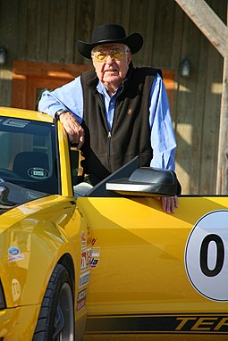

Carroll Hall Shelby (January 11, 1923 – May 10, 2012) was an American automotive designer, racing driver, and entrepreneur. Shelby is best known for his involvement with the AC Cobra and Mustang for Ford Motor Company, which he modified during the late 1960s and early 2000s. He established Shelby American in 1962 to manufacture and market performance vehicles. His autobiography, The Carroll Shelby Story, was published in 1967.[1] As a race car driver, his highlight was as a co-driver of the winning 1959 24 Hours of Le Mans entry.
Shelby wrote his memoir called The Carroll Shelby Story published in 1967 by Pocket Books. In 2019, the book was re-released by Graymalkin Media for the opening of Ford v Ferrari, a 2019 American sports drama film. The memoir describes his days as a race car driver, the challenges, the victories, and the crashes — the worst of which he describes as an “explosion.” The memoir also discusses the genesis for the revolutionary car he created, the Shelby Cobra.
Shelby was married seven times; the first and last marriages lasted 15 years before divorce proceedings. Shelby's first wife was Jeanne Fields; they married on December 18, 1943. They had three children: Sharon Anne (born September 27, 1944), Michael Hall (born November 2, 1946), and Patrick Bert (born October 23, 1947). They divorced in February 1960. Shelby later admitted to an extramarital affair with Jan Harrison, an actress.[45] In 1962, Shelby married Harrison, but the marriage was annulled the same year.[46] His third marriage, to a New Zealand woman, which he entered in order to get her into the United States, lasted only a few weeks before ending in divorce. His fourth marriage, to Sandra Brandstetter, lasted a couple of years before ending in divorce. In 1989, after 28 years of being single, Carroll married Cynthia Psaros,[citation needed] a former actress, beauty queen, and daughter of a retired US Marine colonel fighter pilot.[citation needed] During this marriage, Carroll received his long-awaited heart transplant. Their marriage lasted a few short years before ending in divorce. In the 1990s he married Helena "Lena" Dahl, a Swedish woman he had met in 1968. She died in a car accident in 1997. It was his only marriage that did not end in divorce, annulment, or separation. Just four months after Dahl's death, Shelby married his last wife, Cleo (nee Rendell-Roberts), a British former model who drove rally cars. She was 25 years his junior. They were in the process of divorce when he died in 2012.[47][48][49] Shelby received a heart transplant in 1990, and a kidney transplant in 1996.[50] Shelby died on May 10, 2012, at the age of 89.[51][52] He had been suffering from a serious heart ailment for decades.[53]
